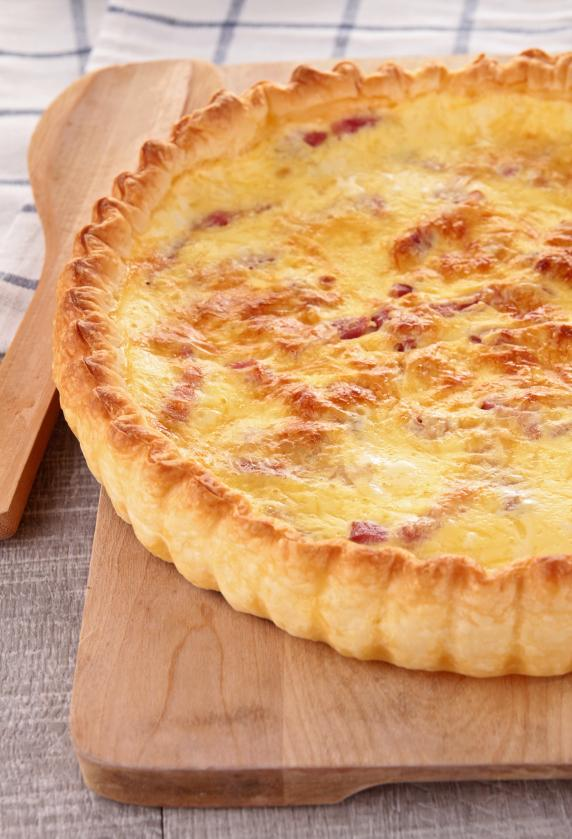

Tarta de Jamon y Queso

Description
This is a very easy to do dish with simple ingredients.
Ingredients
- Cheese
- Eggs
- Jam
- Pascualina
Steps
- Mix eggs in a bowl
- Mix cheese and jam with eggs
- Put everything into the pasualina and close it in a tarta shape
- Put tarta in the oven to cook
- Enjoy with a cold honey flavored beer!